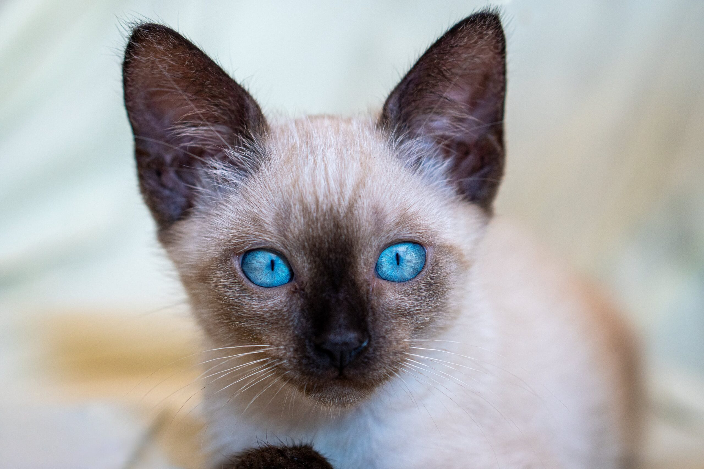

Razze di gatti
-
Siamese
I gatti siamesi sono noti per la loro personalità affettuosa e la loro bellezza elegante.
-
Persiano

I gatti persiani sono famosi per il loro pelo lungo e setoso e per la loro personalità tranquilla.
-
Sphynx

I gatti sphynx sono conosciuti per la loro carnagione nuda e per la loro personalità giocosa.
Cura dei gatti
Per mantenere i tuoi gatti in salute, è importante nutrirli con una dieta equilibrata, garantire loro abbastanza esercizio fisico e portarli regolarmente dal veterinario per controlli e vaccinazioni.
Fatti divertenti sui gatti
- I gatti possono fare le fusa per indicare che sono felici e rilassati.
- I gatti possono cadere da grandi altezze senza farsi male grazie ai loro riflessi eccezionali.
- I gatti possono percepire i suoni troppo alti o troppo bassi per l'orecchio umano.